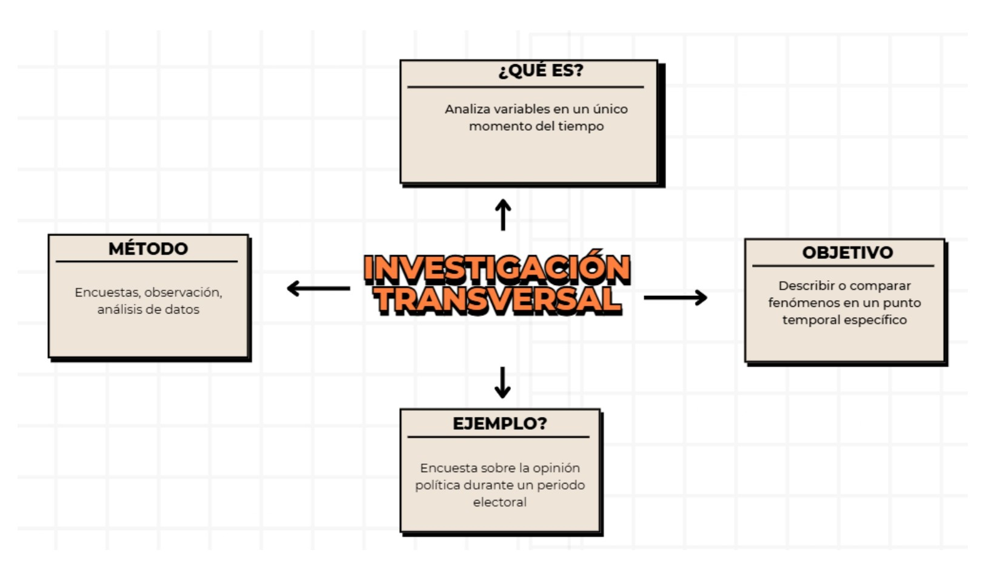

INVESTIGACIÓN TRANSVERSAL
Nuestra penúltima investigación dentro de esta página web, ¿alguna vez te has preguntado el ¿cómo se llama aquella investigación que sucede en un solo momento? Pues bien...
¿Qué es la investigación transversal?
La investigación transversal es un método de estudio en el que se recolectan datos en un solo momento en el tiempo para
analizar una situación o fenómeno específico. No se realiza un seguimiento a lo largo del tiempo, sino que se obtiene una
“fotografía” del estado actual de las variables estudiadas.
Este tipo de investigación es ampliamente utilizada en encuestas, estudios de mercado, sociología, epidemiología y educación,
ya que permite obtener resultados rápidos y analizar tendencias en un grupo de personas en un momento determinado.
Importancia
1. Permite obtener datos rápidamente sin necesidad de esperar largos períodos.
2. Es útil para analizar tendencias y comportamientos en una población específica.
3. Ayuda a identificar correlaciones entre variables sin necesidad de hacer un seguimiento a largo plazo.
4. Se usa en estudios de salud pública, mercadotecnia y ciencias sociales.
Ejemplo
Encuesta sobre el porcentaje de personas con diabetes en una ciudad en el año 2024
En el ámbito de la salud, la investigación transversal se utiliza para analizar la prevalencia de enfermedades en un momento
determinado. Un ejemplo de esto es una encuesta realizada en el año 2024 para conocer qué porcentaje de la población de una
ciudad padece diabetes.
Para ello, los investigadores recopilan datos a través de encuestas, registros médicos o exámenes clínicos aplicados a una
muestra representativa de la población. Este estudio permite:
• Identificar cuántas personas tienen diabetes en ese momento.
• Determinar factores asociados, como edad, género o hábitos alimenticios.
• Comparar la prevalencia con otros años y evaluar si la enfermedad está aumentando o disminuyendo.
Este tipo de estudio es clave para que las autoridades de salud puedan diseñar estrategias de prevención y tratamiento,
además de orientar campañas de concienciación sobre el cuidado de la alimentación y la actividad física.
¿Tienes alguna duda sobre este tipo de investigación?
No te preocupes, te dejamos el siguiente mapa conceptual el cual explica a detalle y de manera resumida lo que trata este tipo de investigación:
Para que todo quede más claro, te dejamos el siguiente video explicativo:
Esperamos que con el siguiente video puedas resolver tus dudas y te quede más claro este tipo de investigación.